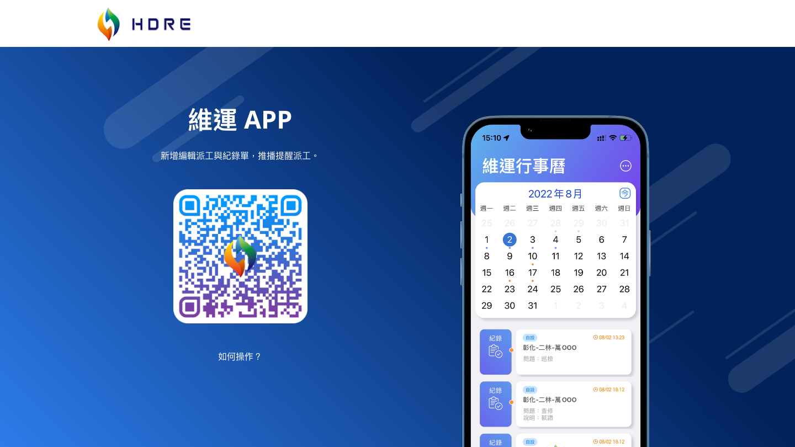
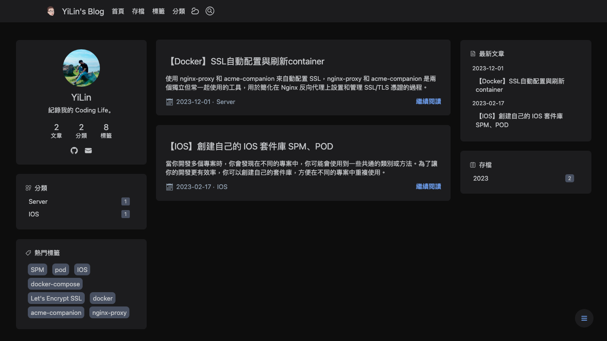
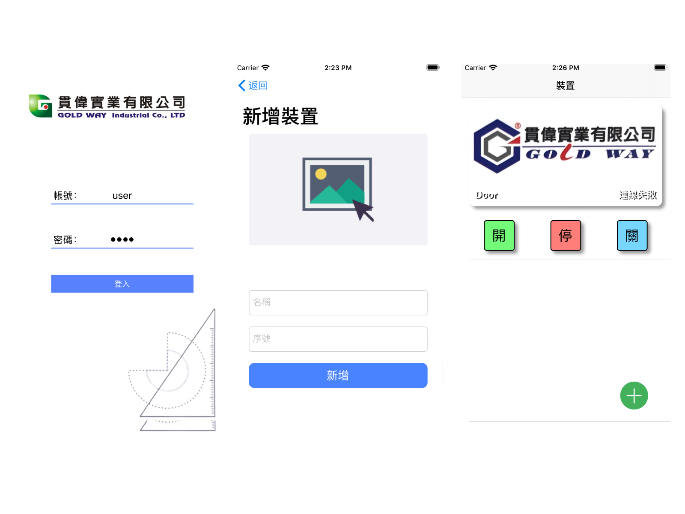
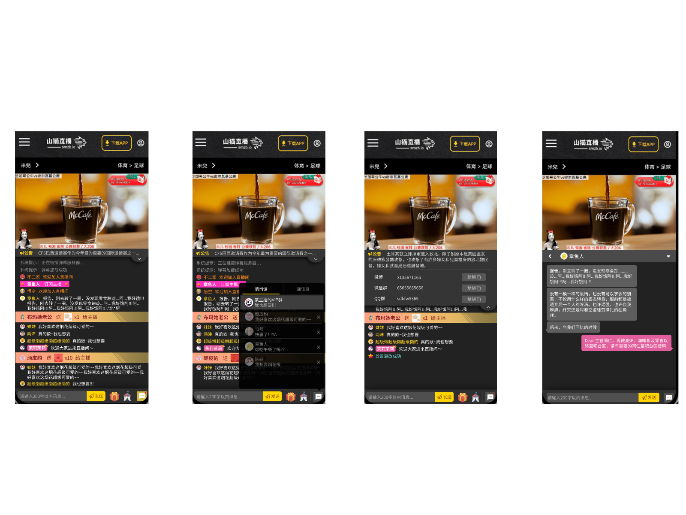
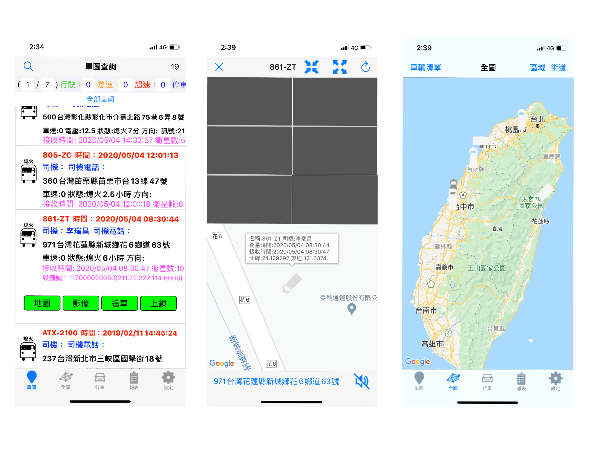
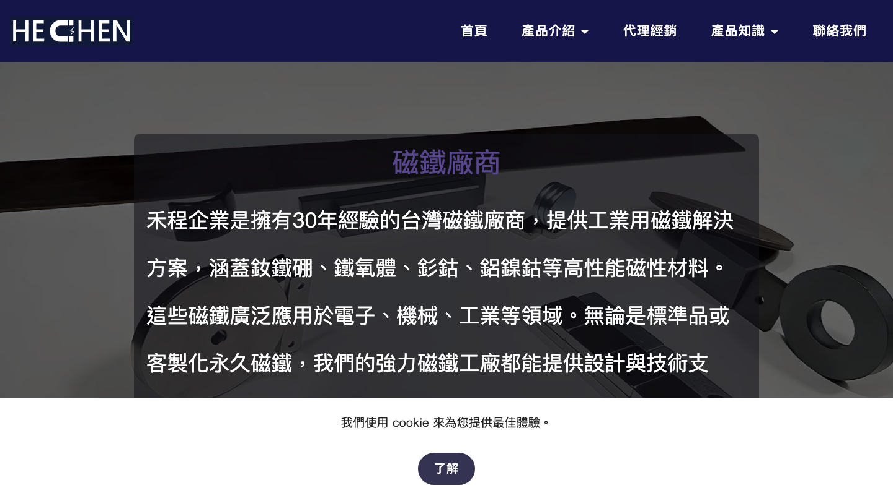
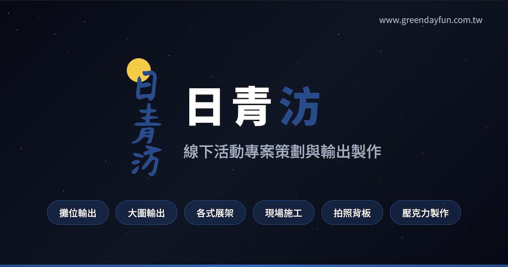

個人簡介
6+ 年原生 iOS 工程師（程式開發 9+ 年），核心專長為 Swift / Objective-C 與 Apple 平台，
有 App Store VPN 類別上架經驗（HiYou SSH：NetworkExtension + Leaf + Trojan / Xray）。
2022 起深度 AI 工程化：每日操作 Claude Code、MCP、Skills、Sub-agent，
能在 AI 輔助下全端交付 Go 後端 / Flutter / Docker / ESP32 韌體。
期待加入 願意導入 AI 工作流 的團隊——職位以 iOS 為主、軟體工程師亦可。
AI 開發實踐 2022–NOW
每日操作 Claude Code 與 MCP 工具鏈。能規劃內部 MCP server、撰寫公司專屬 Skills、培訓團隊 prompt engineering 規範。
// 日常工具
- Claude CodeAnthropic CLI
- MCP Protocoltool integration
- Skills Systemreusable workflows
- Multi-agentparallel orchestration
- Prompt Eng.context engineering
// MCP Servers 實戰
- pencil設計檔生成
- context7即時技術文件
- claude-mem跨會話記憶
- ui-ux-pro-max設計系統諮詢
- superpowersSDD 工作流
工作經歷
- 持續開發 Goldway IoT 產品線（1 人涵蓋多端，開發中）： Go API 後端 (gw_server) + Flutter APP (gw_iot_app / gw_iot_flutter，iOS + Android + Web) + Web 後台 (newWeb / gw-web) + MQTT 服務 + ESP32 打卡 / 門禁韌體，從硬體 firmware 到 Cloudflare 部署皆獨立負責
- 建構 生產級 Go 後端 (Gin + JWT + MySQL + Redis + MQTT) with Traefik v3 反向代理 + Let's Encrypt SSL 終端，docker-compose.prod.yml 分離環境配置，含 deploy.sh 遠端部署腳本（支援 --dry-run）— 架構設計與整合由本人負責，實作大量透過 AI 工具輔助完成
- 深化 AI 工作流：客製 Claude Code Sub-agent (`/分析`, `/規劃`, `/任務`, `/設計`)，並在 gw_server 與其他專案實際導入
- 持續經營 自架技術 blog yilin.tw（Hexo + GitHub + Cloudflare Pages 自動部署 pipeline）
技術 · Go / Gin / Docker Compose (prod) / Traefik v3 / Flutter / ESP32 / MQTT / Cloudflare Pages / Claude Code / Sub-agent / GitHub Actions
- 主導 開發 HiYou SSH iPhone APP，整合 SSH terminal + Proxy 模式 + DNS 風險偵測 + 連線安全評估 + Port Scanning 之多功能網路工具
- 整合 業界主流 proxy 核心至 iOS 端：以 Leaf（Rust 開源 proxy 引擎） 為底層、支援 Trojan / Xray 協議，處理 Rust 核心 → iOS 之 FFI 橋接、tunnel 生命週期、節點切換與設定管理
- 建立 iOS 端 VPN 通道：採用 NetworkExtension framework 之 NEPacketTunnelProvider，處理 TUN 封包導向、DNS 流量、主 APP ↔ Tunnel Extension 跨進程通訊（NSXPCConnection IPC）
- 完成 Apple App Store VPN 類別上架—— 處理 NetworkExtension entitlement 申請、Organization 帳號要求、隱私資料政策聲明、提供 demo server 與測試帳號供審核員驗證
- 實作 SSH terminal（採用既有 SSH 套件）、DNS 風險偵測、port scanning、訪客系統、多語系（簡中 + 英文）
- 迭代 三個 App Store 版本（v1.0.0 → v1.0.2）
- 離職原因 · 公司技術轉移——產品主要客戶為中國市場，因當地翻牆審查政策收緊，公司營運方向調整
技術 · Swift / NetworkExtension / NEPacketTunnelProvider / Leaf (Rust) / Trojan / Xray / FFI 橋接 / DNS / 跨進程 IPC / i18n / App Store VPN 類別上架
- 獨立交付 HDRE 維運 APP（企業內部員工系統）— 一人完成需求訪談、UI 設計、API 規劃、開發、文件、操作手冊全流程
- 交付 禾程磁鐵 (he-chen.com) B2B 網站 — 台灣 30 年工業磁鐵製造商之公司形象與產品介紹網站，含 4 大產品系列、代理品牌、產品知識、響應式設計
- 交付 日青汸 (greendayfun.com.tw) 公司網站 — 線下活動專案策劃與輸出製作公司之服務介紹頁
- 起步 AI 工程化深度實踐：建立 Claude Code + MCP + Skills 個人工作流，將 AI agent 整合進實際接案專案
- 持續經營 個人技術品牌（Github、Blog）
技術 · Swift / HTML / CSS / JavaScript / 響應式設計 / API 設計 / 客戶溝通 / Claude Code / MCP / Skills
- 主導模組之 MVVM 重構 與 XIB 元件化封裝，提升可維護性與新功能開發效率
- 導入 Fastlane CI/CD，全自動化發版流程，消除手動打包上傳的人為失誤風險
- 實作 HTML ↔ Swift JavaScript Bridge，支援 Hybrid 場景之內容熱更新，無需重送審
- 推行 Git Rebase 工作流 與 PR Review 標準，提升 commit history 可讀性，降低 merge 衝突
- 運用 OOP 進階概念（繼承 / 組合 / 聚合）優化模組依賴，降低後續維護成本
技術 · Swift / MVVM / XIB 元件化 / Fastlane CI/CD / Git Rebase / Hybrid (JS Bridge) / OOP
- 獨立設計並交付 WebSocket 即時聊天 SDK，整合會員登入、訊息收發、API 串接於同一介面
- 打包為 .framework，提供外部廠商串接使用
- 自行研究 Framework build pipeline（社群資料稀少），完整文件化以降低 onboarding 成本
- 封裝連線 / 重連 / 心跳機制於 SDK 內部，對外提供簡潔 API surface
技術 · Swift / WebSocket / Framework 設計 / RESTful API / 對外文件
- 維護 RFID + 藍牙 + 網路通訊 整合系統，第一線排除韌體與連線問題
- 累積無線通訊協議實戰經驗，為後續 IoT 端到端專案奠定基礎
技術 · RFID / BLE 藍牙 / 硬體維運
- 獨立建置並維運 MQTT Broker (Ubuntu Server)，支援多裝置同時連線與遠端門禁控制
- 開發 iOS APP 串接 MQTT，將開關門指令以低延遲推送至遠端硬體
- 整合 ESP8266 韌體，完成「APP → MQTT → ESP8266 → 物理門禁」端到端通訊鏈並實際部署上線
- 一人涵蓋三端架構設計（Server / APP / 硬體韌體），是少見的端到端 IoT 實戰經驗
技術 · MQTT Broker / ESP8266 / Arduino / Ubuntu Server / iOS / IoT 端到端
專案
角色 · 主開發者 @ 富聯國際（2024–2026）。 內容 · 整合 SSH terminal、Proxy 模式、DNS 風險偵測、連線安全評估、Port Scanning 之多功能網路工具。 VPN 端 · 整合 Leaf（Rust proxy 引擎）+ Trojan / Xray 協議 至 iOS，透過 NetworkExtension framework / NEPacketTunnelProvider 建立 VPN tunnel，處理 FFI 橋接、TUN 封包、DNS 流量、跨進程 IPC。 上架 · 完成 Apple App Store VPN 類別上架（處理 entitlement / Organization 帳號 / 隱私政策）。 i18n · 簡中 + 英文。
角色 · 主要開發者，自 2017 起與 Goldway（貫偉）合作；2026 起 1 人重啟並開發完整產品線（持續開發中）。 後端 (gw_server) · Go 1.21 + Gin + JWT + MySQL 8.0 + Redis 7 + Mosquitto，分層架構 (api / internal / pkg)，使用 Traefik v3 反向代理 + Let's Encrypt SSL，docker-compose.prod.yml 生產配置，含 deploy.sh 遠端部署腳本與 --dry-run。 APP (gw_iot_app / gw_iot_flutter) · Flutter 跨平台，iOS + Android + Web 三平台輸出。 韌體 (esp 32打卡) · ESP32 + ESP32-S3，ESP-IDF + Arduino。 網站 (newWeb) · 公司形象站含 design-system + 合規審查文件。

企業內部員工派工系統，含派工單、行事曆排程、推播提醒。一人從需求訪談到上線交付完整 SDLC——學到單一工程師如何協調客戶需求、把模糊描述轉成 API 規格與 UI 設計。

Hexo 靜態站 + GitHub → Cloudflare Pages 自動部署，含 Docker SSL 自動化、iOS Package Library 等文章。從零建立 push → build → deploy CI/CD pipeline——學到 DNS / SSL 自動化與 GitHub Actions workflow 設計。

APP → MQTT → ESP8266 → 物理門禁，1 人完成三端整合並實際部署。學到 MQTT broker 部署、QoS 等級設計、嵌入式 WiFi 重連與低延遲控制。

WebSocket 即時聊天 SDK 打包成 .framework 供外部廠商串接。封裝連線/重連/心跳於 SDK 內、對外提供簡潔 API——學到 framework build pipeline（社群資料稀少時自行研究 + 文件化）。

車輛動態即時監控 APP，負責系統維運、API 串接、地圖整合。處理高頻 GPS 更新下的地圖標記效能與電量取捨，學到既有專案的 onboarding 與漸進式重構策略。
德一國際貿易 (TE Autonation) 汽車品牌形象站。GitHub Pages + Google Apps Script 全 serverless 架構——表單送出即經 Apps Script 寫進 Google Sheet 當作 CMS。學到零成本網站架構與用 Sheet 做後端的設計。

30 年資歷台灣工業磁鐵製造商網站。4 大產品系列（釹鐵硼/鐵氧體/釤鈷/鋁鎳鈷）的資訊架構規劃 + Lazy-load + Tab 導航 + 響應式。學到 B2B 內容分類、把客戶模糊規格整理成結構化網頁。

線下活動專案策劃與輸出製作公司網站，含展場設計、大圖輸出、拍照背板三大服務。Canvas 星空動畫背景 + 視差捲動——學到用 canvas 製作背景效果而不犧牲效能，以及商務型 landing 的視覺節奏設計。